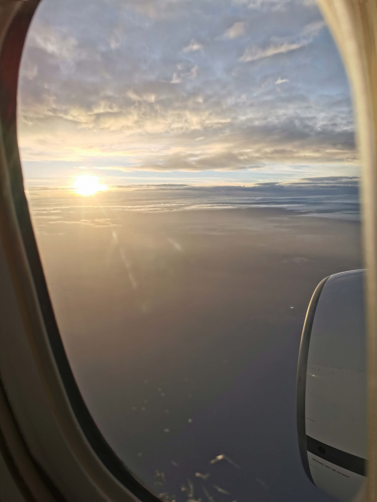
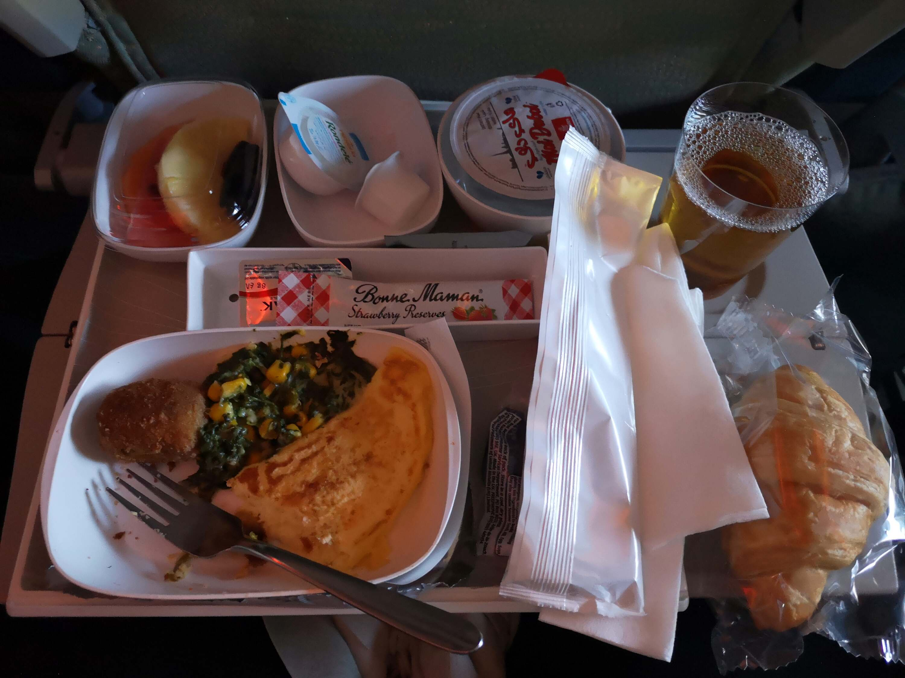
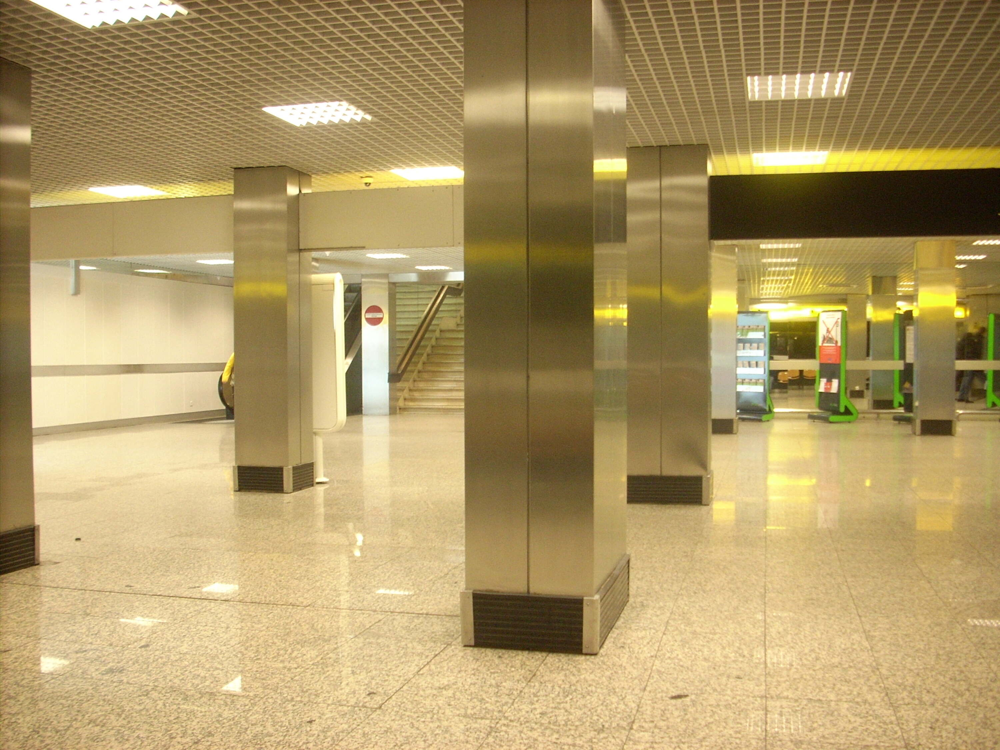
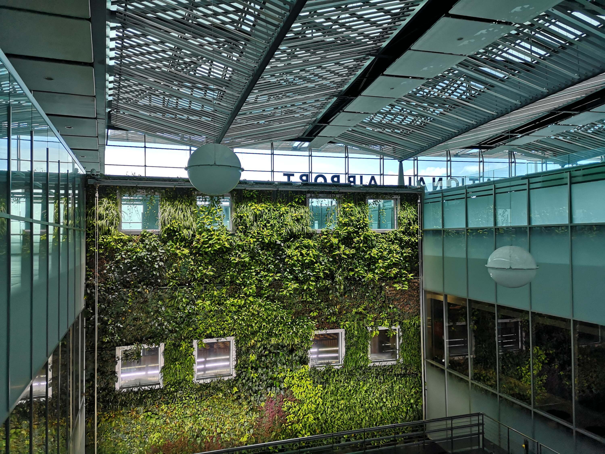

Flying is terrible
Published on 20 May 2023 11:04AM / 3604 words

I never loved flying. I tolerated it in the beginning. Then grew fond of it. Until it became the worst possible way of transportation there is. Now I am considering renouncing flying altogether.
Sounded a bit dramatic, didn’t it? Oh well, imagine how strong is my frustration with flying then.
Premise: I am an old flyer. I started boarding planes in the mid 1990s. Before low cost airlines, before the concept of going through an international hub to reach your final destination was born. If you wanted to fly back then, 99% of the times it was your national flag carrier airline, within Europe, and for longer flights there were alliances that meant you were sent to another national airline somewhere closer to your final destination. It was normal to have 2, max 3 flights to reach even the most remote location in the world. You flew from your local airport to a national/international hub, then to the other company’s hub, then to your final destination. Services like seat reservation, sizeable hand luggage, a simple meal, water/coffee/tea/soft drinks were all naturally included in the price of your tickets. Even in 30 minutes flight a sweet or cookie was given without costs. On some companies, beer and wine were also freely given with the cheapest ticket.
I was not in love with flying back then. But I learned how comfortable was to come to the airport 1,5 hours before your departure and be at destination in a handful of hours. You could bring with you any amounts of liquids, nobody blinked an eye. Going through security was mostly a matter of exposing your electronics and removing anything metallic from your pockets. If you were flying outside of your home country, you could find amazing deals on cigarettes, tobacco-related products, and alcohol at foreign airports. A bottle of your favourite spirit could cost one third less than at home. Thank God for the duty free shop! For me it was a ritual to spend some time shopping in airports before coming back home in search of hot deals. Which were regularly found.
But then, everything changed for the worse…
Flying today is a stressful experience
Anybody that asserts that loves flying today must be a masochist. You at most tolerate it, if you are sane of mind. The panorama of flying has dramatically turned sour in the last 20 years.

Seats are getting tinier and tinier
It is not mystery that airlines have been trying to squeeze as much earnings per flight as possible for years. Which meant actually squeezing people in shrinking seats that have lost up to 10cm in legroom over the last 10 years. Flying has become physically painful for some, and certainly less enjoyable for everybody. Even low cost long range buses have better legroom sometimes than planes. For a fraction of the price.
I am not particularly tall, just your average white european man here, but can’t stop thinking how in the 1990s you had way more legroom for similar ticket prices. I am not considering the low cost carriers here as Ryanair, but comparing the likes of British, Lufthansa, Alitalia, Iberia and so on from once to today. And invariably there is less space for each passenger than in the past.
Personally I can resist 2-3 hours in economy just ok. But longer flights on today’s seats are a nightmare. It shouldn’t be allowed to fly 5-10 hours on such small seats, with little room to move around. Especially if the save in rates is non-existent compared to the same companies 15-20 years ago.
Furthermore, planes have the added problem that unless you take a aisle seat, you are forced to wake up or ask other passengers to be able to move around the plane. Not that you can go much farther than the toilette, or briefly standing in the corridor. There is really nothing to do on planes outside of your seat. They are basically made to make you stay seated at all times, for obvious security reasons. Thus, suffer for a few hours in your tiny seat, next to foreigners, and God forbid you think of spending half the flight standing, as crew and other passengers will stumble upon you every couple of minutes.
I’d rather starve than eat in airports again
A twist on the common “food on planes taste terrible”, I have had enough of overpriced, bland, advertised as typical, buy-and-eat in a rush, food at airports. Seriously, I am not saying that there’s no ok food to be had before flights but the times I had a decent meal can be counted on a single hand’s fingers.
I am not looking to spend 40EUR for a dry pork cutlet, shakingly resting over questionably-looking potatoes (true story). Nor 3EUR for a bottle of water that mere metres outside of the same airport costs half that. Airport food has become such a scam at this point that unless you are one of those traveling in business class with complimentary access to your airline’s lounge, I’d rather not eat anything for hours than wasting money on this food.
And, arguably, lounges are also offering quite overpriced food. But the feeling that it is included in what you already paid makes it feel like it is better.

It is not like 20 years ago starred restaurants were available in most airports or that any drink was priced the same as outside them. I am not painting such a rosy image of the days of old. But food was not so overpriced as today, and choice was not so limited either. The number of Starbucks, McDonald’s, generic asian joint, and overtly touristic “brasserie” has doubled over the years. Eating at Heathrow or Brandeburg or Malpensa or Singapore isn’t much different anymore.
Duty “free”
At least while waiting for your next flight once you could enjoy shopping at luxury and non stores inside the airport. I remember prices for spirits or tobacco being sometimes much cheaper than at home. I stroke quite a few deals on eau de toilette and found the spanish ham I was aiming to take home wasn’t criminally overpriced over the same that I oogled at during my Spain vacation.
That was a decade ago, minimum. Nowadays I have seen more and more luxury stores a-la Gucci, Rolex, Longchamp, Armani, with over-the-top prices, and fewer and fewer of “normal” stores, of local brands, with local products. Those are left in huge “duty free” stores that have become less and less “duty free”, if they are at all anymore. I regularly find cigars to be priced above what I can buy at home, parfumes are at least the same price you can find in your local Sephora store, and even those ubiquitous fridge magnets cost the same as if you bought them in front of Tour Eiffel, the Colosseo, the Topkapi or right in the middle of Ubud.
Who buys at these stores anymore? Are you all supremely rich that can throw 5EUR at a magnet, 150EUR at a 100ml eau de toilette or 1000EUR for a middle-sized bag? And if you are, why don’t you have your own private jet instead of flying with us plebeans?
Thing is, I see no point anymore in spending any second browsing through stores that are either the same everywhere you travel to, or offer stuff that is so out of my budget that makes me board the flight feeling an homeless guy. It is depressing thinking that what was once a pleasure, and part of the travel experience, has been so exploited by greed that it is completely ruined for the most of us, average workers. Last time I actually bought something that was not food or water at an airport was probably 7-8 years ago. That part of the experience of flying has died out. Now I just ensure that I am early enough to catch the flight and go through security as fast as possible, heading straight to my gate.
Which brings me to the next complaint.
Security is getting more convoluted
In the last few years, I noticed that security checks have become weirder, and occasionally truly crazy. Even in the immediate months after 11/09 it was not that difficult to go through security. It was a matter of taking out your electronics, all your metal stuff in pockets, your belt and, perhaps, your shoes. Nearly all airports followed these rules, and you had to do it once.
Now? Even thrice for a single flight. And it seems there is no consistency whatsoever across airports. In some you must remove shoes, in others you can even keep keys inside your pockets. In others all electronics go out of the bag, in a few they cared only about laptop and tablet, but I could keep my GoPro, power bank, and camera inside. I inevitably get checked from time to time because the scan detected something on me at an airport but later in the day, with the same clothes on, at a different airport I pass through just fine.
Which brings me to the craziest and most infuriating change about security in recent years. Why do we have to pass through it multiple times at the same airport now? A few months ago in Istanbul I was checked at the very entrance of the airport, then before the gates as usual, and then again at the gate before boarding. I am the same person, with the same luggage, in a controlled environment, how is it this a sane effort to reduce security risks for all passengers? It is a waste of time, plain and simple. Especially the checks at the gate, after being checked already and not having been able to interact with anybody else that is not a passenger of a flight or an employee of the airport. That area before boarding should be secure by definition, and it once was, as you were not forced to go through security when you had a short layover.
Today I find increasingly possible that if 2-3 flights are necessary to reach your destination, the stuff your bought after the first security check may be confiscated at a second or third one along the line. And there is no way for you as a passenger to know if you will have to be checked again and should save the 4EUR to purchase a bottle of water because it is not allowed to be carried with you later. I still crave that San Pellegrino can that I bought at Singapore mere metres away from my boarding gate that was confiscated by a police agent because “not allowed on board”. Sigh. Why has security become so convoluted, strict, and unreasonable that feels like tyranny? It was supposed to help us travel safely, knowing that bad actors could 99.99999% of the time being stopped by it.
Now it is more a nuisance, a waste of time and money, that makes me think if it is not just a ploy to make us spend more money on the same bottles of water.
Delays and long walks
I am all up for a nice jog from time to time. In nature, possibly, but I do not disdain one in a large city either. Surely I am not looking to do it in an airport though. But increasingly I find like I am.

Delays have always been a possibility. Airlines were more frank back in the early 2000s though. How many times nowadays you board a flight that should be 3:20 long and once cruising the captain tells you that the flight will take approximately 2:50? Me, practically every time. And why, you may be wondering? Because declaring that the flight time is a bit higher than what actually necessary to get to destination means some padding time in case of delays. No compensation necessary then, which saves tons of money to airlines.
Understandably. I am personally never been one that complained about half an hour of delay. Only when I had a connecting flight in an hour. But normally, I am fine with some delay.
I am much less fine with being dropped at gate 41 of terminal 2 and having a connecting flight, even with the damn same company, at gate 15 of terminal 1. It takes half an hour just to reach the next gate, and if you are forced to go through security again, your 2 hours layover that you imagined spending reading or people watching is gone. A fretful jog ensues instead, weighted with the fear of missing the right turn or stair and ending up losing your next flight.
I wish airports were a little better organized. Small ones are no issue, as it takes 15 minutes to go through their entire length anyway. But multi-terminal ones are a russian roulette of “where will we be dropped this time?”. When 20 years ago a 1 hour layover was plenty to accommodate for some delay and enough to reach your connecting flight, today is extremely risky unless you are an olympic runner. 2 hours is the minimum time I would comfortably allow between flights these days. Which makes planning a trip all the more complicated.
Risk of losing luggage
I guess everybody who travelled for 20+ years has had their luggage lost at least once. I had, when going through Amsterdam (if you know, you know). It was unpleasant but at least in less than 48 hours it was brought to me free of charge.
Losing your checked luggage if you pack carefully is not the end of the world. Unless the luggage is lost forever, that is. But 2-3 days without one of your bag should not ruin your trip.
The problem is that flying is the only method of traveling that has this risk. With a train, a ferry, bus or car you have the risk of it being stolen, but not losing it because an employee of your traveling company was distracted and did not put it on the right plane. It is an added stress that pertains to flying only that I would rather not to have.
And no, traveling with one bag only is not a solution, thanks. That would increase the “do I have everything I need with me” stress tenfold. Which is something that other means of transportation don’t have either. Plus, I enjoy not looking like a bum when traveling, thank you very much.
Lowcost airlines digression
Lowcost airlines are one of a kind. They deserve their own section. And all the hate you can summon.
Being able to fly for 20EUR is amazing. Or was, as these rates are harder and harder to find these days. But if you needed a weekend escape to Malta or Madeira for some sun in the middle of a foggy November, airlines like Ryanair or Wizzair were a Godsend. Pack lightly, jump on the smallest seat you can imagine for a couple of hours, and get out in a sunnier place for 48-72 hours of vacation. What’s not to like? Thus, their success.
Today, most of these flights are closer to 100EUR one-way than 10EUR. If you all need is a small backpack, that’s still fine. But if you are flying to stay a week or so away, then such a small baggage becomes a too strict restriction as your age advances. Once you need anything more than a few clothes with you, then the price range of a lowcost company is dangerously close to the one of a “normal” one. Considering traveling with family, where you most certainly want to sit next to each other, then adding a few more bills for seat reservation means that your “low cost” flight has matched price with an AirFrance, KLM, British or Lufthansa one.
Moreover, the big companies let you flight from main to main airport across countries. Flying into CDG in Paris makes a world of difference compared to Beauvais, which is over one hour by bus away from Paris center. A low cost airline loses much of its appeal once you factor the added costs to travel more comfortably, the subpar service, and the commuting time from far away airports to your final destination.
I am increasingly moving away from companies like Ryanair because of their reduced convenience in the last years. I find low cost flying to be still convenient when it is the only direct route option. But when a moderately long layover is present, nearly always a non-lowcost airline is my preferred option now.
Increasing number of services, like seat reservation, not being free anymore
Speaking of added costs, one of the aspects of flying that bothers me the most compared to 20 years ago is what is actually included in the ticket price. 20 years ago a Lufthansa flight would have always included a free choice of your seat, a full meal or snack depending on the flight’s length, and one piece of free hand baggage. Today there’s none of that. Everything has to be paid extra. For comparably the same base price, if not even more.
Similarly with other companies, flying in economy means just having a random seat somewhere on a crowded plane, with perhaps free water and a light snack. And that’s it. Nothing else is given freely. Not even the certainty of having your small bag in the overhead lockers anymore. Unless your bag is truly tiny and can fit under the seat in front of you, you may not have any guarantee that it will be close to you, or even in the same cabin as you anymore. This was unthinkable when I was young. You had not to fear being separated by your bag while flying, with any company, no matter how crowded the plane was. The worst that could have happened was that your bag was put a few rows before or after your seat, but never in the cargo hold.

Today it seems that all planes are too full to fit all the hand baggage, that even coffee is a paid luxury, that choosing a seat with less than terrible legroom is a boon, and that to replicate the service of years back you have to splurge for premium economy or business. It is like planes have reduced free features, while being physically not dissimilar from those I remember from my youth. Keeping rates similar, if not higher. Sounds too close to a scam rather than a business.
Flying is awful, and we all have grown to accept it
With all things considered, a great slice of the current population is not aware that once flying was pleasant, or at least bearable. Even in economy. Youngsters believe that cramped on a seat for 5+ hours without even a free glass of water (Wizzair, really?) is perfectly acceptable and always been the case.
I revolt against this. It is no more acceptable to be so miserable over the clouds as it is today. Once flying was a luxury way of traveling, with great service and extreme speed to reach far away destinations that would take days or weeks otherwise. Now plane passengers are melons to squeeze as much juice (aka money) from, by forcing them in the most inhuman conditions possible. Those that can bear it can travel fast for a good deal. Those who cannot, have to open their wallets wide.
I don’t know when and if I will be on a plane again. The last flights I had, both outside of Europe and within it, have made me increasingly disattisfied with the whole experience. Only premium economy flights have an acceptable level of comfort these days, but there are few available seats only, and for most short routes it is a class that is not offered at all. If premium economy seats were widely present on planes, I would accept flying more often. Even if that meant spending 50% more than economy. But for shorter trips, I would rather take one day off work more each time and use the train, which for similar prices offers a vastly superior traveling experience.
Long haul flights have still no alternative, unfortunately. Needing to travel 10000km in a reasonable time gives travellers no choice than flying. If I traveled often such long distance I would be in a real conundrum of spending each time more for premium economy or giving up parts of those trips. Luckily I don’t have to, I have flown far only for pleasure. For one or two trips a year, premium economy seats are my salvation. But flying should not be like this, having to upgrade your travel class to have a decent travel experience. It should be the default. The priciest classes should be to have a better experience, for those wanting to travel more comfortably.
I know that it doesn’t not make economical sense for a company to offer the level of service of premium economy for the price of economy class nowadays. I don’t care. It should be illegal to let human beings travel for hours in such dire circumstances, globally. Until this is a reality, if it will ever be, I will be limiting my time on planes as much as I possibly can. The industry needs to shake up and realize that we have reached the bottom of travel quality as passengers. Either they cut some of their earnings or we should not travel as often on planes anymore.
I have no hopes that either will happen (at least for most of us). Flying will remain terrible.